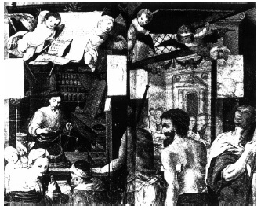

ŞEKİL 75. Eczacı olarak İsa: Buradaki resim, çift yapraklı bir başlık sayfası üzerinde suluboya olarak yer almakta ve figürlerin, sanatsal bir kaygıyla hazırlandığı anlaşılmaktadır. İsa, sol eliyle bir terazi tutmakta, önündeki masanın üzerinde, üzerinde “İnanç”, “Sevgi”, “Umut” yazılı etiketlerin yer aldığı “ruhsal eczane”nin kapları ve haç şeklinde resmedilmiş bitki köklerinin bulunduğu küçük bir çuval görülmektedir. Hastalar ve güçsüzler, ona yönelmiş durumda olup sahnenin üst tarafında çocuk melekler yer almaktadır.147
DÖBEREİNER ÇAKMAĞI
Jena’lı eczacı Johann Wolfgang Döbereiner’in (1780-1849) tutuşturma makinesi, bizim çakmakların öncüsü olarak görülebilir. Döbereiner, basit bir eczacı iken, 1818’de Jena Üniversitesi Kimya Kürsüsü Başkanlığı’ndan bir çağrı alarak “Ordinaryus” unvanıyla oraya geçer.
Kendi çağında heyecanla karşılanmış olan “Döbereiner çakmağı”nda (1823) hava ile hidrojen gazı karışımı (Alm. “Knalgaz”), toz halindeki platin ya da platin süngeri (gözenekli platin metali) üzerine gönderilmekteydi. Hidrojen, platin yüzeyinde hava oksijeniyle şiddetle birleşmek istediğinden, oraya bağlanma sonucu bir ısınma olmakta, hidrojen gazı katalitik yolla tutuşmakta ve küçük bir alevle yanmaktaydı (ilk çakmaktaşsız- ve de manyetosuz-çakmak!). ŞEKİL 76’da, 1840 yapımı bir Döbereiner çakmağı görülmektedir.